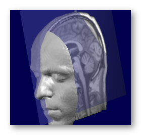
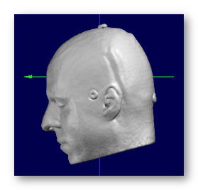

Creating Inverse Solution Matrices
This page is about creating the matrices for solving the Inverse Solution (IS) problem.
You can then use these matrices for display, or to compute the results of inverse solutions from EEG (or frequency) files.
Here is a highly recommended article about practical use of the inverse solutions:
"EEG Source Imaging: A Pratical Review of the Analysis Steps", C.M. Michel, D. Brunet, Front. Neurol., 04 April 2019
What are Inverse Solution matrices
Creating the matrices
MRIs preprocessing
Electrodes preprocessing
Solution space
Lead Field processing
Solution Points and Lead Field cases
Matrix inversion
What are Inverse Solution (IS) matrices
These matrices are the solutions of the so-called distributed linear inverse problem : recovering the most probable sources of activity from the brain , without any assumption to the number and/or locations of these sources, given only the EEG surface recording of these sources.
Right away, it should appear that there are quite a lot of difficulties in this process, some of them being:
-
we wish to retrieve 3D activities (inside the brain) from a 2D recording (surface EEG), in which all signals have been summed up;
-
the recovered signal is blurred by the underlying tissues (skull mainly), and weakened proportionally to distance;
-
there are many physical constants to account for, not all being well known (f.ex. skull conductivity);
-
there are many mathematical and computational issues in the process itself.
But fear not, all these can be reasonably addressed.
"The theory"
All the theory and formulas will not be covered here but can be found in the following literature:
Electrical Neuroimaging,
Chr. Michel, Th. Koenig, D. Brandeis, L.R.R. Gianotti and J. Wackermann,
Cambridge University Press, 2009.
Niedermeyer's Electroencephalography, chapter 55 "EEG Mapping and Source Imaging",
Chr. Michel, B. He,
Lippincott Williams & Wilkins, 2010.
"EEG source imaging",
Chr. Michel, M.M. Murray, G. Lantz, S. Gonzalez, L. Spinelli, R. Grave de Peralta,
Clinical Neurophysiology, 2004.
"Electromagnetic Inverse Solutions in anatomically constrained spherical head models",
L. Spinelli, S. Gonzalez Andino, G. Lantz, Chr. Michel,
Brain Topography, 2000.
"Review of methods for solving the EEG inverse problem",
R.D. Pascual-Marqui,
International Journal of Bioelectromagnetism, 1999.
"Electrical neuroimaging based on biophysical constraints",
R.G. de Peralta Menendez, M.M. Murray, Chr.M. Michel, R. Martuzzi, S.L. Gonzalez Andino,
NeuroImage, 2004
These are also some very interesting reading here about the forward & inverse model, clinical validation and monkey experiment:
"EEG Source Imaging: A Practical Review of the Analysis Steps",
C.M. Michel, D. Brunet,
Front. Neurol., 04 April 2019
"Head model and electrical source imaging: A study of 38 epileptic patients",
G. Birot, L. Spinelli, S. Vulliémoz, P. Mégevand, D. Brunet, M. Seeck, C.M. Michel,
NeuroImage: Clinical, 2014
"Whole-scalp EEG mapping of somatosensory evoked potentials in macaque monkeys",
A.-D. Gindrat, C. Quairiaux, J. Britz, D. Brunet, F. Lanz, C.M. Michel, E.M. Rouiller,
Brain Structure and Function, 2014
"Spatiotemporal Analysis of Multichannel EEG: CARTOOL",
D. Brunet, M.M. Murray, C.M. Michel,
Computational Intelligence and Neuroscience, 2011
"The practice"
Now that you have read all the above articles ;-) let's go practical.
The purpose of these computations is to produce mainly:
-
a matrix,
-
a set of fixed loci in the brain (called the solution points, SPs, or solution space).
The matrix is later multiplied by an EEG column, which gives a column made of 3D vectors. Each of these 3D vectors is localized by its corresponding solution point, and is equivalent to a small dipole of any orientation and intensity.
Computing the matrix and solution points has to be done only once for a given head and electrodes configuration, which is the purpose of this section. The last stage of multiplying by some EEG data is later done either in real-time, through the dedicated RIS toolbox (highly recommended), or finally to convert results to volumes .
Creating the matrices
We can not emphasize enough how sensitive the whole computation is, and that great care should be taken as each of these steps is a whole process in itself :
-
Using the LF to solve the Inverse Problem
-
Choosing the Inverse model: LORETA, LAURA, Weighted Minimum Norm , etc..
-
It is suggested to try each of these 5 steps one at a time, until you get a grasp of each of them. Plus, you can very often re-use the results from a previous run , like re-orientation of the MRIs or coregistration, that actually has to be done only once...
Also see the Drag & Drop paragraph to learn some handy behaviors to save time (and nerves?).
Called from the Tools | Inverse Solutions | Creating Inverse Solution Matrices menu, the following dialog holds all the parameters, organized in 5 (quite) independent parts:
|
MRIs Presets: |
Quick setup for the MRIs preprocessing part, then you can tune up the buttons to your liking. Presets might change according to version, but mainly allow you to choose:
|
|
File with the full head, preferably with the following properties . |
|
|
File with the skull-stripped brain, i.e. it should contain the grey & white matters, and preferably the cerebellum, with the following properties . |
|
|
Optional file with the Grey Mask. It is recommended to let Cartool compute this mask by letting this field empty . The Cartool Grey Mask is much thicker than the usual Grey Matter masks given by other packages, and fulfills other purposes. |
|
|
Optional, though highly recommend, full head volume segmented into tissues . This can really improve on the Lead Field computation later on. |
|
|
Apply any of these steps on the MRIs, with this sequence: |
|
|
Compensates the Bias Field for the brain only, to allow for a better grey/white matters segmentation. If the bias field has been already corrected for, it doesn't really hurt to do it again, though it is a useless step. BTW, there is also no need to run the Bias Field correction on templates, as it was certainly done at some point during construction. |
|
|
MRI data are noisy, plus the scalp can have creases and ridges due to lying on the back, or having cushions / earphones / electrodes on the head. In either cases, we need to smooth out these folds so that the surface of the head appears more regular:
|
|
|
Re-orient axis to RAS (X:Right, Y:Anterior, Z:Superior), SPM-compatible orientation. We also use the neurological convention, not the radiological one, that is the right part of the head is seen the right side . |
|
|
This parameter is highly recommended in case the head is not perfectly aligned with the Y-Z sagittal plane. It will search for the optimal sagittal plane and reorient the head to fit it into the Y-Z plane. It needs the full head as input. The search is done with 3 parameters: 1 translation in X (left-right ), 2 rotations around Y and Z. See here for setting the origin. |
|
|
Note: this step is not longer mandatory, Cartool can do without... Search the brain for the cutting slice with the maximum transverse extent, and reorient the head to fit it into the X-Y plane. This is not an AC-PC realignment, just a geometrical one. It needs the brain as input. The search is done with 2 parameters: 1 translation in Z (vertical ), 1 rotation around X. See here for setting the origin. |
|
|
Electrodes Presets: |
Quick setup for the electrodes preprocessing part. Current presets are the following:
|
|
File with the electrodes coordinates . |
|
|
Solution Space Presets: |
Quick setup for the solution space processing part. Current presets are the following:
|
|
Targeted Number of Solution Points: |
Specify here the desired number of Solution Points, which is actually a sub-sampling of the Grey mask. The actual number will be as close as possible to the user input, but will certainly slightly differ. See this topic about the number of solution points.
This field is also used when reloading a Lead Field, and can be used to limit the number of solution points to retain. If not empty, Cartool will therefor downsample the solution space / Lead Field. And BTW, it is much better to interpolate the Lead Field with Cartool own computed Solution Points ... |
| Brain to Grey Mask conversion: | You can control how the grey mask will be extracted from the brain. |
| This is the default option in Cartool. It extracts a kind of band around the grey matter, as to make sure the solution space will not have holes in it. | |
|
Some rare case need to bypass the Regular option
above, and use the whole brain instead. These cases are when the Grey Matter / White Matter detection fails, as for Babies / Newborns or Monkeys. |
|
|
You can otherwise load an existing Solution Points file. Either to save time because you have already computed it before, or to be able to compare results by varying other parameters. Solution Points is a very sensitive topic, be careful not to load erroneous points! |
|
|
See: Lead Field processing and Solution Space vs Lead Field cases |
|
|
Lead Field Presets: |
Quick setup for the Lead Field processing part. Actual presets might vary on your current version of Cartool, but here are the main usual choices:
|
|
Lead Field computation needs to know, among other things, the boundaries between a few tissues :
These boundaries can currently be retrieved by 2 means. |
|
|
By scanning the input T1 MRIs (head and brain), Cartool can approximate the brain, CSF, skull and scalp boundaries . Though no not perfect, it is still quite robust and accurate enough that it can be used for subjects / patients cases. It also works OK for template. |
|
|
An already full head segmented tissues file can be provided, with each voxels labelled as grey matter, white matter, CSF, skull, scalp, and even eyes, blood, air etc... This gives the best results, but this labelling should be done ahead of time by using another toolbox for the time being. For the MNI 2009c asymmetric template, a segmented tissues volume is available for download. |
|
| Targeted age: |
Mean age for the estimation of skull thickness
and relative conductivity, in the range [0..100] years. Setting an age will automatically update these two values according to curves estimated from the literature. |
|
Absolute conductivity of the skull, in [S/m]. |
|
|
Mean thickness of the upper part of the skull,
in [mm]. The automatic skull thickness detection actually gives relative thicknesses. They are converted to absolute with the help of this value. Note that this option can be independently toggled off, in case user has given a segmented tissues file to exactly rely upon. |
|
|
Reload a previously computed LF from file. Either to save time to re-compute only the inversion part, or you might have computed the LF in another toolbox. |
|
|
When loading the Lead Field from file, this is the Lead Field matrix file itself. |
|
|
You have to load a Solution Points file associated with the above loaded Lead Field! |
|
|
This is where the Lead Field matrix, that computes the voltage received at each electrode from the dipoles' currents, is mathematically "inverted" , and will allow us to estimate the dipoles' currents from the electrodes voltage (magic!). There are quite a few models available here, all of them being from the Minimum Norm family. Also note that the inversion part is totally independent from the Lead Field model part! |
|
|
The ancestor of all methods below. The simplest of all. |
|
|
Simple derivation from the MN above. |
|
|
Inspired by the Dale article, kind of similar to dSPM. |
|
|
A standardized MN. |
|
|
Variation to MN with smoothness constraint. The most robust to noise. |
|
|
Sibling to LORETA, with another approach to the smoothness constraint. Also robust to noise. |
|
|
Has no errors in localization the max, but only on specific conditions. |
|
|
Note: previous versions of Cartool used to the
Tikhonov regularization
as an
option.
But as this option was nearly mandatory, it has been removed from the
User Interface. The regularization is now systematically computed!
Plus, the non-regularized matrix is still embedded within the saved
matrices, should you feel bad about that... Includes a Tikhonov regularization parameter in the inverse process. This is highly recommended when dealing with noisy data (so, all data?). You need not specify the Tikhonov constant itself, instead a range of constants will be deduced from the current inverse matrix. You end up with as many matrices as there are constants, all packed into a super-matrix , from which you could select the best one according to your data. The actual Tikhonov constants can be found in the verbose file , though (we know you couldn't sleep without knowing them). |
|
|
Options |
|
|
Output Base File Name |
Base directory and file names for all output files. |
|
How much you want to follow and check each processing step? |
|
|
Interactive Processing |
Follow each step of the processing, checking the intermediate results and answering questions to confirm their validity when needed. If something seems wrong to you, you will usually get kicked out of the process, and invited by a specific message to check your data. |
|
Batch Processing |
This will run in a fully automatic mode, without asking any feedbacks, so that it can be run in the background or in parallel. Check the verbose file and all output files however!
Avoid this option
Otherwise, please refrain from the Black-Box temptation and don't click on this, do interactively monitor the process!
If something seems to fail during the process, usually Cartool will stop the whole thing, but in some places, it will try to continue anyway. |
Drag & Dropping files
You can Drag & Drop any of the input files into the dialog, for quicker action. This is usually an un-ambiguous behavior, f.ex. dropping a .xyz file is only meant to be the electrodes used for the coregistration.
The case worth mentionning now is when dropping some Solution Points files , because they can be either the Solution Points associated with a Lead Field , or the Solution Points for the output Solution Space . Then the following rules apply that fit most of the cases:
-
If a Lead Field is already known (or is also dropped together):
-
A Solution Points file with the same number of solution points will be associated with this Lead Field;
-
Conversely, any other Solution Points file will be assigned to the output Solution Space .
-
-
If no Lead Field is known:
-
If 2 Solution Points files are dropped
-
the one with the highest number of Solution Points is associated with the Lead Field ,
-
the other one to the output Solution Space.
-
-
For any other number of Solution Points files (usually 1), the file is assigned to the closest field it has been dropped on in the window.
-
MRIs preprocessing for inverse solutions
MRIs input
MRIs processing
MRIs results
MRIs input
You need two or three MRI files as input:
-
Mandatory, the full head, with as much of the neck / face / jaw as possible
-
Mandatory, the segmented brain:
-
grey & white matters together;
-
but skull-stripped
-
preferably with the cerebellum
-
-
Optionally, you can provide the Grey Mask of your liking, although Cartool has its own way to compute it...
F.ex. a subject's full head, brain and grey mask as computed by Cartool:

Note that if you miss the brain MRI part, you can still perform some very basic transformations, like resizing or re-orienting, but of course not the whole inverse computation!
MRIs properties
The input MRIs should fulfill the following conditions:
-
Accepted file formats are: Nifti1, Nifti2 or Analyze .
-
They could be either of a template head (MNI f.ex.) or some subject / patient's head .
-
The full head should ideally be big enough to include the face & neck , but Cartool could cope with a cropped head at cerebellum/ear level.
Also anything other than the head should be manually deleted , like headphones, tubes, wires etc.. -
All MRIs should be T1s, of any size. Anisotropic volumes will be resliced on the fly.
-
All MRIs should share the same orientation, though it can be of any type.
-
MRIs should of course be in a right-hand coordinate system (right part is seen on the right). This was a problem with the old Analyze format, but not anymore with Nifti.
-
The brain and grey mask MRIs should fit exactly into its corresponding head (no tiny shifts, no rotations...).
-
Brain should preferably contain the cerebellum.
If some of these conditions are not fulfilled, you have to somehow prepare your data before entering this part, either in Cartool or in some other utilities (MRICro, SPM...).
See some good examples of MRIs input:
A full MRI that includes the whole face is better, i.e. the jaw & neck, as it will be easier to coregister the electrodes on it:
These MRIs have been cropped at ear level, which is less ideal but Cartool will try to proceed anyway. Also note that these 2 examples have a different orientation systems, and Cartool will cope with that, too:
See some bad examples of MRIs input:
Here are some bad matches between the brain and the full head (slight lag, and wrong orientation respectively):
Here is another problem: headphones were used and are still visible on the MRI. These for sure will interfere with the head modelling, as if it were part of the head! So anything "floatting around" the head should be deleted beforehand :
MRIs processing
We strongly recommend to do as much preprocessing as possible before entering this toolbox . For example with the MRI Preprocessing toolbox of Cartool. However, for cases where this is not possible, you still have a few of the following options as fallback.
Bias Field correction
This operation is performed only on the brain MRI.
It aims at reducing a MRI artifact that causes intensities to be slightly amplified according to position , with a low-frequency type of pattern. It is a good idea to try to reduce this artifact before trying to separate the grey matter from the brain!
The method used here has been designed specifically for Cartool, and works by scanning the MRI in many directions, and for each direction by looking at the distribution of the histogram and applying a correction along this axis. The artifact is modeled as a multiplicative factor.
See here an example before and after Bias Field correction:
Filter noise
Two filters are applied internally (you don't see these), to remove some noise and to smooth out the ripples from the scalp surface:
-
Median filter (2.83 voxels diameter, equivalent to 18 neighbors),
-
Gaussian filter (6.5 voxels diameter).
See here an example of before and after filters, just for the sake of demonstration, as this is all done internally:
Note that these filters are usually not needed with the templates, as they are already quite noise-free.
Realign
This includes either 1 to 3 steps:
-
Always setting the orientation to the RAS (SPM-compatible / default Nifti orientation);
-
Optionally aligning the sagittal plane to the plane that cuts the brain into 2 hemispheres;
and/or
-
Optionally aligning the equatorial plane to the biggest transverse slice of the brain.
This aims at re-arranging the axis so that:
-
X axis points toward the Right side
-
Y axis points toward the Anterior side
-
Z axis points toward the Superior side
See an example, going from the PIR (Posterior, Inferior, Right) orientation to the RAS orientation (look at the color of the axis, as the labels on the border always indicate the meaning of the axis, and so won't change!):
-->
Note that globally, Cartool is quite independent of any orientation system, but for the sake of simplicity, working here only with the RAS system makes things much easier and less error prone.
There will be some outputs that will go back into your original MRI size and orientation . That way you can visualize and compare results with your other modalities.
This is an important step that has to be done at some point in the MRI processing! We wish to have an as precise as possible cutting mid-sagittal plane , which will allow us to nicely distribute solution points "equally" on the left and right cortex. The alternative is that points would be entangled in a single slice, or mixed between left and right!
This option will find the optimal sagittal plane that cuts the brain into 2 hemispheres, search being done within the full head. The search is done with 3 parameters: 1 translation in X (left-right ), 2 rotations around Y and Z.
See an example here, with the found sagittal plane superimposed in transparency:

Note that this is still an approximation: the 2 hemispheres never exactly split equally with a simple plane, especially around the visual cortex.
This option will realign the transverse plane in a fashion that closely resembles to the MNI template. This will bring more consistent and visually pleasing results.
Find the optimal transverse plane, the one that cuts the brain with the biggest extent (length x width). The search is done with 2 parameters: 1 translation in Z (vertical ), 1 rotation around X.
See an example here, with the found transverse plane superimposed in transparency:
Setting the origin
This step is not listed in the dialog box, because it is mandatory and done all the time!
We need to set a geometrical center for the brain, the point from which the brain could best seen as fitting to a sphere (though we do not explicitly do it). This is because the LSMAC Lead Field model make use of a spherical model, and therefore need a reasonable center to compute the relative radii between solution points and electrodes.
In the usual case, the middle of the intersection line of the sagittal plane and equatorial plane is taken:
If only the sagittal or the equatorial planes have been computed, the missing information is used from the center of the brain's bounding box , and sometimes the origin of the brain, if it is set.
If neither the sagittal nor the equatorial planes have been computed, the origin is the center of the brain's bounding box, or the origin if it is set.
We strongly recommend to always use both planes detection , except for the MNI template which only needs the equatorial plane detection!
MRIs results
We are dealing here with the results of the MRIs preprocessing section only:
-
1 to 3 MRIs, depending to your inputs and processing options, saved in Nifti format;
-
MRI file basefilename.Head.nii contains the full head;
-
MRI file basefilename.Brain.nii contains the full head;
-
MRI file basefilename.Grey.nii contains the grey mask;
-
-
MRIs can be resampled, reoriented, cropped and centered according to the given parameters;
-
These files are written unfiltered (filtering is used only at processing time).
See some good examples of MRIs results:
Before the Sagittal & Equatorial search, reorientation, and centering:
And after the successful reorientation:

See some bad examples of MRIs results:
Here the Sagittal and Equatorial searches totally failed (this is an example, which has been fixed since then):
Electrodes preprocessing
Electrodes input
Electrodes coregistration
Doing nothing
Electrodes already coregistered
Interactive coregistration
Rework interactive coregistration
Electrodes results
Electrodes input
You need one electrodes file as input:
-
The surface electrodes of your recording
-
Any auxiliary / fiducial / funky electrode should be removed beforehand!
Electrodes properties
The input electrodes should have the following properties:
-
Only the surface electrodes should be there, no auxiliaries, no landmarks etc...
-
The electrodes should cover as much surface as possible of the head. It might be a good idea to work with 257 electrodes f.ex. then remove some electrodes after the coregistration.
-
There should be enough electrodes, at least 64 and above.
-
It could be either an electrodes template, or the electrodes measured from a real head.
In the latter case, the measures should be as accurate as possible, as this has a direct impact on the reliability of the inverse solutions!
-
The template should preferably be non-spherical, i.e. it is far better to have a real head shape. There are work-around, though.
-
Input orientation can be arbitrary, and can even be different from the orientation of the MRIs. This will be reworked during processing.
See some good examples of electrodes:
The first two are electrodes templates with different number of electrodes, the third one is a subject's real electrodes, all of them being OK:
See some bad examples of electrodes:
Not enough electrodes (29!), plus it has a spherical shape. Don't even think of using this:
Globally enough electrodes, but doesn't cover the head enough. To totally avoid as inverses won't work properly:
Enough electrodes, with a good coverage of the head, but has a spherical shape . This is not ideal, though you might be able to proceed through , but still not recommended:
Real measured electrodes with heavily corrupted coordinates. Better use a template in this case:
This is a good template file, but you need to remove the lone electrodes / landmarks that "float" below the surface:
Electrodes coregistration
Here are the available processing on the electrodes set.
Doing nothing
Don't make use of the electrodes at all, so no Lead Field and no Inverse Solution either...
Note: this is set from Presets list, there is no button for this.
Electrodes already coregistered
Load and use the electrodes file, which should alreay fit exactly on the Head MRI: same orientation, centering & scaling.
Note: if the MRIs are going through some geometrical transforms (re-scaling, re-orientation, rotations etc...), then the same transforms will be applied to the electrodes coordinates, as to remain correctly coregistered.
Interactive coregistration
The user has to manually coregister the electrodes set to the head, in real time. It is his/her responsibility to make sure the electrodes set is coregistered correctly: positioning the Fpz / Cz / Oz electrodes, respecting the symmetry on the head etc...
It will launch the Coregistration Toolbox , and resume to the Inverse Matrices toolbox soon after.
Interactively refining an existing coregistration
This follows the exact same process as the Interactive coregistration , except that the electrodes model is loaded as is, without computing a new center, orientation or size. It assumes the model is already well adjusted to the head surface, and only needs some slight adjustments.
Electrodes results
We are dealing here with the results of the Electrodes processing section alone:
-
2 electrodes set, saved in .xyz format:
-
One file basefilename.xyz is the one used for the actual IS computation, which should fit as much as possible the surface of the head .
-
One file basefilename.For Display.xyz is a modified version of the previous one, where the electrodes have been slightly pushed away from the surface, only to produce a more visually pleasing display when superimposed to the MRI.
As its name implies, this version is for display use only, and should not be re-used for any computation!
-
-
Both sets are coregistered to the full head MRI;
See some good examples of electrodes set results:
The result from coregistering a template electrodes set to a real head, with the results not glued to the surface.
First picture is the "official" result, and as it is so close to the surface, you get this half-blent appearance, which is normal. Second picture is the same with some depth-shifting on the electrodes, for a better visual result. Third picture is the For Display version, more appropriate for display use:
See some bad examples of electrodes set results:
Here is an example when just loading an electrodes set and assuming it is coregistered, when indeed it is not (guess the results won't be that good?):
Here is an example where gluing should have been avoided, the electrodes landing inside the head through the MRI's defect is not a good thing:

Solution Space
Grey mask extraction
Solution Points computation
Loading Solution Points
Same Solution Points as Lead Field
The solution space is the next thing you need to work on after the electrodes. It gives the positions of the points where the inverse solution will be computed .
The user can:
-
Let Cartool compute the Solution Points, which is optimal for the next operations
-
Load an existing file "as is", and trust it is well defined
This, together with the Lead Field options, allows for all possible of combinations.
Grey Mask extraction
Most of the time, we need a mask of the brain's grey matter:
-
From which the Solution Points will be computed;
-
For displaying the Inverse Solutions in that area only.
(this step is performed automatically when computing the Solution Points , so there is no explicit option for this in the dialog)
Grey mask processing
Cartool processes the brain into a grey mask the following way:
-
Correcting for the Bias Field (optionally),
-
Estimating the global intensity distributions of the Grey / White / "Black" matters with a Mixture of Gaussians,
-
Classifying each voxel into Grey / White / "Black" matters by mixing:
-
Gaussian probabilities based on intensity
-
Neighbors likelihood (more grey neighbors -> higher chance to be grey, too)
-
-
Smoothing / filling holes of the resulting grey mask. This step is quite important before the ensuing downsampling to solution points!
Note that this conversion can also be ran from the MRI Window, with the Filters | Brain processing | Segment to Grey Matter menu, and choosing the Regular or Fat method.
See here an example of the grey mask extraction:
Grey mask vs Grey matter
The grey mask extracted by Cartool is thicker than your usual grey matter, which can be quite thin near some given areas of the brain.
This is an important point, as smoothing is always required before correctly downsampling to Solution Points. Otherwise we end up with aliasing effects (Nyquist theorem) of the solution space: missing points where the spatial frequency is below the downsampling spatial frequency. So please keep in mind that the grey mask extraction is more than a grey matter extraction, and is better done the "Cartool way" to ensure a correct solution space .
See here an example of a subject's Grey matter (on the left), and the corresponding Grey mask from Cartool (on the right):
There are some cases where the usual Grey mask extraction will fail. The most common cases are when the histograms of the Grey vs White matters are not correctly estimated: for newborns, or animals like monkeys or mice.
In that case, just use the option to compute the grey mask on the whole brain. It will still poke out the csf parts, but after downsampling you might get solution points in the Black matter (csf). It doesn't harm the inverse solution whatsoever, and the inverse shouldn't give you any significatn results in those points.
Here is an example on newborn, first showing the Grey mask, then the brain with the superimposed solution points:
Solution Points computation
The Grey mask is basically downsampled (with great care) into the Solution Points the following way:
-
Run a downsampling loop, with a non-integer downsampling factor:
-
Downsample the grey mask, centered around the geometrical center,
-
Remove voxels with less than 8 neighbors out of 26,
-
Count remaining voxels,
-
if close enough to the desired results, exit the downsampling loop,
-
otherwise, slightly adjust the downsampling factor and repeat the loop
-
-
See here an example of a slice of a grey mask, with the corresponding converted SPs on top:
Actually, the Solution Points extraction is an important step of the Inverse Solutions, very often overlooked, if not totally ignored in the literature. Here are some points which Cartool is especially taking care of.
SPs Left-right distribution
First, remember that the MRIs should have been aligned with their midsagittal plane . That means the geometrical center of the MRIs is going through a YZ plane (the midsagittal plane) that cuts the brain in two (nearly) equal parts.
When downsampling the grey matter into the SPs, the new SPs downsampled center has to remain through this midsagittal plane. This way will ensure that the resulting SPs distribution will be optimally distributed across the midsagittal plane, with no side receiving more SPs than the other one .
Otherwise, having an asymmetrical distribution of SPs will have a dramatic impact on the inverse solutions, with more weights given to one side of the brain, or even results that could be assigned the wrong side of the brain ! Of course, a real asymmetrical (pathological) brain will have its midsagittal plane set according to its anatomy, and will have an asymmetrical distribution of SPs. The point is, the distribution of SPs has to reflect the reality, and not to artificially favor one side over the other.
See here an incorrectly downsampled grey mask (on the left), with too many SPs on the right side (especially near the midsagittal plane), and a correct one (on the right), with the little remaining left-right differences stemming from the actual shape of the brain:
SPs Minimum neighborhood
The inverse process will later need the computation of a discrete Laplacian in the Solution Space. To be able to do that correctly, each solution point has to have enough neighbors. We drew a quite conservative limit for each Solution Point to have at least 8 neighbors out of 26 , and the ones who don't fulfill this criterion to be removed.
SPs Continuity
With this method, we aim to have SPs even in the thinnest parts of the grey matter, and to have an even coverage of the grey matter as a whole. It should be obvious that there can not be any inverse solution results on non-existent SPs (!), resulting in a lack of precision for some brain areas.
Another risk, if some SPs were to be missing in some grey matter parts, and some brain activity were to be coming from these very same areas, would be that the closest SPs to the missing parts would be ellicited by the inverse solution. But the closest SPs might prove to be not good enough, like being too far, or being on the other hemisphere f.ex.
See here an example of a bad SPs distribution (on the left), with SPs missing in the occipital and frontal parts, and a better distribution (on the right), without holes and with a fuller coverage:
Number of SPs
Choosing the number of SPs is up to the user, with a recommended range from 3000 to 6000, and a default set to 6000.
There are pros and cons for both low and high number of SPs, some being more or less obvious:
|
Lower number of SPs |
Higher number of SPs |
|
(+) Faster to compute the matrices (+) Less memory (+) Less numerical precision issues (+) Smaller matrices & Faster display |
(-) Longer to compute the matrices (-) More memory (-) More numerical precision issues (-) Bigger matrices & Slower display |
|
(-) Less spatial resolution (-) Less spatial accuracy (-) Less neighbors around each SPs |
(+) More spatial resolution (+) Somehow more spatial accuracy (+) More neighbors around each SPs |
-
Speed is only a slight annoyment. If you are in a hurry for some reasons, use something like 3000 SPs. Otherwise, run it during a break, 5000 SPs and 257 electrodes should be done in about 10 minutes per matrix, 6000 SPs in about 30 minutes.
-
Memory issue is a real problem. If you encounter some problems, make sure your machine has enough of physical memory, is healthy and set correctly. If the problems remain, try to reduce the number of SPs, from 5000 down to 3000.
-
Numerical precision issues come from the fact that inverting huge matrices will cumulate more errors than for smaller ones. However, this shouldn't be a real problem here, and nothing can be really done about that in the realm of digital computers.
-
Bigger matrices shouldn't be a real concern with our current storage capacity. However, a higher number of SPs can be slightly detrimental to the speed of the inverse display, as there are more rows to compute from the inverse matrix.
Now, about the sensitive topics of spatial resolution (grid spacing) and accuracy (to be spot-on). If first recommend you to get an idea of what these terms really mean .
-
More points means more spatial resolution, always, as the resulting grid spacing will be smaller.
-
More points also means more accuracy, but up to a limit. First, accuracy can not be better than the resolution. So you have to increase the number of points to also increase the accuracy. But accuracy will stop improving past a given number of SPs (i.e. the inverse solution is not "getting better"), somehow due to the fact that the quantity of information inputted into the system remains the same, and is set by the number of electrodes. Also, the matrix inversion process can intrinsically provide only a given level of accuracy.
To summarize, from our experience, the range 3000 to 6000 SPs seems correct for regular adult human brains.
-
As said earlier, there needs to be enough neighbors around each SP . And the more SPs, the more neighbors there are for each SP. Again, 3000 looks like a minimum value here.
SPs Results
When computing the Solution Points, you'll have the following results:
-
A Solution Points file, output format is .spi.
Some remarks about the output of the Solution Points extraction:
-
Points are regularly spaced on a grid, but may not be aligned on MRI's voxels nor X/Y/Z axis.
-
SPs are named according to which octant they belong to:
-
First, 3 letters within Left/Right, Posterior/Anterior and Inferior/Superior
(like in "LAS" for the Left Anterior Superior),
-
Followed by a number within that particular octant
(like in "LAS123" for the 123th point).
-
See this paragraph about all combinations of Solution Points / Lead Field options .
Loading Solution Points
Use this option with care, Cartool will load your file "as is", so it better had to have these properties:
-
It should be in the same space as the MRI Head / Brain / Electrodes XYZ ;
-
It should be topologically fit for the inversion step :
-
Points should be inside the brain, and preferably in the grey matter (though having points in the white matter is no big deal). However, points outside the brain will certainly produce an erroneous Lead Field and inverse matrix.
-
Points should be aligned on a grid, but this grid is not required to be aligned on the X/Y/Z axis, nor to land exactly on the MRI voxels center.
-
Each point should have at least a few neighbors (at least 1!), to be able to compute some neighborhood constraints, like a Laplacian.
-
Left-right distribution should be balanced and reflect the actual distribution of the grey matter, especially near the mid-sagittal cutting plane. If the points are not symetrically distributed, some locations will be missing and the Laplacian will not be correct, too.
-
Loading a Solution Points file is of interest if you want to compare different Lead Fields, while keeping the inverse space constant.
Also, see this paragraph about all combinations of Solution Points / Lead Field options .
Here is an example of re-loading a qualified Cartool-computed solution space , on top of the brain:
And here is an example of re-loading a Cartool-computed solution space , on top of an existing Lead Field (a typical case for Lead Field interpolation ):
Same Solution Points as Lead Field
If you are reloading a Lead Field, with its associated Solution Points file, you can simply tell Cartool to use it as the output solution space.
In case the amount of Solution Points is too high, you can (approximately) downsample the solution space and the Lead Field to a given number of points.
Also, see this paragraph about all combinations of Solution Points / Lead Field options .
See here an example of (heavy) downsampling, from 150'000 points to about 3'000:
Lead Field processing
What is the Lead Field
Lead Field input
Lead Field computation
Loading the Lead Field from file
Lead Field results
What is the Lead Field (LF)
The Lead Field K (sometimes called the Forward Solution as opposed to the Inverse Solution) is a matrix that embodies the physical relations that exist between the current sources in the brain and the electrical potentials on the surface, as picked up by the electrodes. It is made up of:
- the geometrical relationship between the solution points and the electrodes , i.e. how far and at which angles they lie respectively;
- and electromagnetic laws, i.e. how the electromagnetic field propagates through different media, and the resulting voltage on a receiving electrode.
This matrix is used at the core of the Inverse Solution , and the accuracy of its construction will be directly reflected in the inverse solutions. See here an example of how one frontal electrode (yellow) will get most of its potentials from solution points which dipoles align with the red vectors:
There is certainly a trade-off between the complexity of the model, the amount of parameters to know and adjust, the time and ease to compute it, and its effectiveness in the whole Inverse Solutions scheme. For sure, the more realistic and the more parameters there are, the better the model should be. But there are also practical issues, like the speed of computation, the reliability of the results, the real contribution of a more complex model as compared to a simpler one. Last but not least, not all physical parameters (like the skull conductivity ) are well known for the moment.
Lead Field input
To actually compute the Lead Field in Cartool, you only need:
-
The Solution Points, also in the MRI space.
Or you can otherwise reload an existing LF, in which case you need:
-
The Lead Field file (a matrix),
-
Its associated Solution Points file (list of points).
Lead Field computation
Computing the Lead Field can be split into a geometrical part, and an electromagnetic part:
-
The only geometrical model currently available is the LSMAC model (Locally Spherical Model with Anatomical Constraints), which is very close to a BEM model. Note that the older SMAC model has been retired;
-
Tissues thicknesses are then estimated from the MRI
-
Tissues conductivities are also estimated from a table
-
The electromagnetic model could then be:
-
3-Shell model + exact equations (for testing purposes)
-
4-Shell model + exact equations (recommended)
-
6-Shell model + exact equations (also recommended)
-
Loading your own LF, either from a previous Cartool computation, or from another package.
You can also visit this paragraph about all combinations of Solution Points / Lead Field options .
LSMAC geometrical model
The LSMAC geometrical model is basically a way to transform the real head shape into some intermediate local spherical model. Because it is done with different parameters for each electrode position, it preserves many of the original head properties, like local thicknesses.
Also note that this step is totally independent to the electromagnetic model and its number of layers.
Here we can see f.ex. how the spherical parameters will be different for different 2 electrodes (in yellow):
See the article for an introduction to the method:
"Spatiotemporal Analysis of Multichannel EEG: CARTOOL",
Denis Brunet, Micah M. Murray, Christoph M. Michel,
Computational Intelligence and Neuroscience, 2011.
The idea is to push the spherical model to the limit of its capabilities, while keeping the benefits of its equations (relative!) simplicity. It can be thought of a sort of BEM model, as it approximates the boundaries of the brain and skull.
The LSMAC processing pipe-line is very similar to the older (and obsolete) SMAC model:
MRIs & Electrodes -> Extract Gey mask & Solution Points, Compute Laplacian -> Compute Scalp / Skull / CSF / Brain radii & Spherical Model, for each electrode -> Compute LF
It is important to note that a spherical model is computed underneath each electrode , so the global model accounts for the real scalp / skull / CSF / brain radii, as a BEM model would.
A global spherization model is computed by fitting a parametric model to the scalp. It is then used to convert the head to a sphere, with internal skull, CSF and brain boundaries adjusted for each electrode.
See here the spherization sequence done in Cartool, showing: the full MRI fitted with a scalp model, and how the model warps into a sphere.
Tissues boundaries estimated from MRI
The electromagnetic models will need to know the boundaries of either 3 or 4 of the following layers: scalp, skull, CSF and brain layers. When only 3 layers are actually needed, then the brain and CSF will be merged into as a single layer with weighted average conductivity.
When this option is checked, Cartool will estimate the radii of the skull, CSF and brain under each electrode from the provided T1 MRI.
Note that in case the skull has been operated and still has some open holes in it, you might want to switch off this option by using one of the Lead Field Preset. In this case, predefined, constant radii will be used in the model. Of course, this should be used only as a last resort...
Also note that scanning through a T1 MRI is quite a difficult task, and will essentially provide relative thicknesses. To recalibrate these relative thicknesses into absolute thicknesses, Cartool will use the table shown below.
Here is an example of the 4-Shell surfaces extracted from the T1 MRI (left), and a close-up to 4 electrodes with their corresponding positions shown at each layer underneath (right):
For the Lead Field computation, Cartool needs only the skull information below each electrode locus, and not for the entire head.
To do so, Cartool extracts a radial sample, from the electrode position to the geometrical center, looks for a type of valley pattern in the intensity levels near the expected bone, and takes the edges of this valley as the skull boundaries.
See here an example of the relative radii of the inner and outer parts of the skull, for 257 electrodes, some of which being on the cheek and near the neck (100% corresponds to the electrode distance):

This example shows clearly the advantage of adapting the scalp/skull/brain radii according to each electrode, as the inner skull radii vary from 35% to 85%, and the outer part from 42% to 92%.
Some remarks about the output of the Skull estimation:
-
There should be 4 files:
*.Boundary 1.CSF Inner Surface.xyz
*.Boundary 1.Skull Inner Surface.xyz
*.Boundary 2.Skull Outer Surface.xyz and
*.Boundary 3.Scalp Outer Surface.xyz
in the "More" directory, which contain the 4 layers boundary estimated for each electrodes.You can superimposed them to the full head to check each surface and each electrode radii.
-
The .vrb verbose file will contain a full table of the absolute and relative radii of each layer and for each electrode.
Tissues boundaries computed from segmented tissues file
Better than estimating the boundaries from the T1 MRI , user can provide a volume with each voxel labeled as a given tissue index.
Example of a segmented tissues file (MNI):
Tissues indexes are stored in the associated <same file name>.txt file, and is currently accounting for 14 different tissues:
1 Scalp 2 Fat 3 Muscle 4 CSF 5 Blood 6 Eye 7 Air 8 Skull 9 SkullCompact 10 SkullSpongy 11 SkullSuture 12 Brain 13 Grey 14 White
The skull goes through a lot of changes across age, especially from newborn up to 17 years old. Its thickness increases over the time, while its relative conductivity to an electromagnetic signal also decreases.
Unfortunately, both thickness and relative conductivity are needed to compute a reliable the Lead Field. To increase the confidence in the model, the user has now to specify the targeted age for its inverse solution. Cartool then uses two tables to convert the age to mean thickness and age to conductivity, then updates these two fields in the dialog.
Here is the age to thickness curve, with age ranging from birth to 100 years, and thickness in [mm]:
This curve was built from these 2 data sets, the first one on 0 to 20 yo, the second above 20 yo:
"Increase in cranial thickness during growth,"
A. F. Roche, ,
Hum. Biol.,
vol. 25, pp. 81-92, May 1953.
"Evaluation of Skull Cortical Thickness
Changes With Age and Sex From Computed Tomography Scans",
E.
M. Lillie, J. E. Urban, S. K. Lynch, A. A. Weaver, and J. D. Stitzel,
J. Bone Miner. Res.,
vol. 31, pp. 299-307, Feb 2016.
Note that Cartool first estimate the skull from the T1 . Then it adjusts the global thickness according to the curve above. This could be taken advantage of, f.ex. if one only has an adult template at hand, but still needs an inverse for some younger individuals. By using the adult template, and forcing the mean thickness to be thinner, user can achieve a better estimate of the Lead Field (also, templates for all sorts of age exist nowadays).
Age to skull & other conductivities
There is a field to specify the absolute conductivity of the skull, in [S/m]. Also see the paragraph above about skull thickness.
It is usually automatically set from the following age to conductivity curve (unit in [S/m]), with age ranging from birth to 100 years:
The other tissues conductivities have been set to (using the McCann reference below, but may change in the future):
| Tissue | Conductivity, in [S/m] |
|---|---|
| White Matter | 0.1462 |
| Grey Matter | 0.3787 |
| Blood | 0.5737 |
| CSF | 1.7358 |
| Scalp | 0.4137 |
Literature is very scarse on the estimation of the live skull conductivity. Old numbers were estimated from cadavers, and were proven to be way to low as to live ones. Herer are the references that have been used:
"Variation in reported human head tissue electrical
conductivity values",
H. McCann, G. Pisano, L. Beltrachini,
Brain Topography, 2019 & 2021
"Measurement of the conductivity of skull,
temporarily removed during epilepsy surgery",
R. Hoekema, G.
H. Wieneke, F. S. Leijten, C. W. van Veelen, P. C. van Rijen, G. J. Huiskamp,
et al.,
Brain Topogr., vol. 16, pp.
29-38, Fall 2003.
Once assumed within a (local) spherical model, the tissues thicknesses and conductivities estimated, Cartool can proceed with the electromagnetic models, with the following optinos available:
- The old Ary approximation for 3-Shell model (obsolete)
- The new exact analytic equations for 3-Shell, 4-Shell or 6-Shell models
Ary approximation
Note: this model is obsolete and is still there for backward compatibility only. Use the more precise exact equations below .
For the old Ary, isotropic 3-Shell model (only), Cartool uses an approximation to the exact analytic solutions to the electromagnetic equations.
It essentially replaces a dipole in a 3-Shell model by an equivalent dipole in a 1-Shell model, which equations are much easier to compute. The equivalent dipole is the original dipole, but shifted a little deeper into the brain. The radii ratio between the original and shifted dipoles will depend on the relative conductivities of the skull to the ( scalp + brain + CSF ) layers, among many things.
There also exist improvements to this method, f.ex. by Scherg & Berg, or Zhi Zhang.
This Ary method has been the one in used since the early days of Cartool, and has proven to be quite robust.
Reference:
"Location of Sources of Evoked Scalp Potentials: Corrections for Skull and Scalp Thicknesses",
James P. Ary, Stanley A. Klein, Derek H. Fender,
Biomedical Engineering, Vol. BME-28, No6, June 1981.
Niedermeyer's Electroencephalography, chapter 55 "EEG Mapping and Source Imaging",
Chr. Michel, B. He,
Lippincott Williams & Wilkins, 2010.
Electrical Neuroimaging,
Chr. Michel, Th. Koenig, D. Brandeis, L.R.R. Gianotti and J. Wackermann,
Cambridge University Press, 2009.
Exact analytic equations
The full, exact, analytic solutions equations for any number of isotropic layers has been implemented since 2021. It is currently used for 3-Shell model, 4-Shell model and 6-Shell models:
- 3-Shell model is made of brain, skull and scalp layers;
- 4-Shell model is made of brain, CSF, skull and scalp layers;
- 6-Shell model is made of brain, CSF, skull compact, skull spongy, skull compact and scalp layers.
This one does not make use of any approximations, for the spherical case. It gives the exact potential from the exact (spherical) positions of both the solution point and the electrode, and through any number of isotropic spherical layers . It is therefore logically expected to give better results than the Ary 3-Shell approximation. Although it involves two double recursive Lagrange formulas, its implementation runs pretty fast anyway.
The formulas for the 4-Shell model can be found in (note there is an error in the general formula, corrected in Nunez & Srinivasan book):
"A fast method to compute surface potentials generated by dipoles within multilayer anisotropic spheres", Zhi Zhang, Phys. Med. Biol. 40, 1995. "Electric Fields of the Brain - The Neurophysics of the EEG", Paul L. Nunez, Ramesh Srinivasan, Oxford University Press, 2nd Ed. 2006.
Loading the Lead Field from file
The Lead Field (aka Forward model) can be reloaded from an external file . The main reasons could be:
-
You computed a LF with another model (like a BEM or FEM), and want to plug it into the inversion step of Cartool,
-
Or you just want to re-use the LF computed by an earlier run of Cartool, hence saving time.
See this paragraph about all combinations of Solution Points / Lead Field options .
Loading Lead Field - Input files
You need two input files:
-
The Lead Field matrix file, which can be any of the following format :
-
Its associated Solution Points file, which can be any of the following format :
Lead Field results
Only if you have computed the LF, you'll have the following results:
-
The .lf Lead Field matrix that can be re-used for later computations (technically saved as double precision).
-
The .ris file also contains a copy of the Lead Field, which can be used both for display and for later reloading (saved as single precision).
-
For display purpose only, the Lead Field matrix converted into an .sef file. It can be used to display as a map how each SP influences all electrodes.
It only holds the norm of the vectorial Lead Field, per SP, once transposed.
-
The .vrb verbose file contains some detailed results from the optional radii from skull computation (scalp and skull radii and thicknesses).
Solution Points and Lead Field cases
All combinations of Solution Points and
Lead Field cases
Interpolating a Lead Field
Downsampling a Lead Field
Neutralizing some solution points
All combinations of Solution Points and Lead Field cases
Cartool allows all possible combinations between computing / loading Solution Points , and computing / loading Lead Field. Here is a table to sort out all these cases and explain their meaning and consequences:
|
Solution Points \ Lead Field |
Cartool computing Lead Field |
Loading Lead Field |
|
Cartol computing |
This is the standard way: Cartool is computing everything for you (isn't it nice?). |
User loads a pre-computed Lead Field, f.ex. from another toolbox, but let Cartool computes its own Solution Points. The Cartool Solution Points will not match the input Solution Points / Lead Field, so an interpolation is needed. |
|
Loading Solution Points |
User forces the solution space locations, but then lets Cartool compute its own Lead Field. This is useful for the sake of comparing Lead Field from Cartool and from other models. See these remarks about what conditions the input points should fulfill . |
User forces the solution space locations, while also loading a Lead Field with another solution space. This is useful to switch from an existing solution space to another one, which allows comparing a solution space across different Lead Fields. It is important that the interpolated solution space encompasses / includes the targetted solution space , so that an interpolation can be actually computed. See these remarks about what conditions the input points should fulfill . |
|
Same Solution Points |
User reloads a Lead Field and its associated solution space, but Cartool will only use the given Solution Points and compute its own Lead Field. If the loaded solution space happen to be too big (above 8000 points), then this solution space will be downsampled. |
User reloads a Lead Field and its associated solution space. This is useful when the model has to be loaded "as is", and only the final inversion step is needed. If the loaded solution space happen to be too big (above 8000 points), then this solution space and Lead Field will be downsampled. |
Here are also the recommended scenarios, by decreasing order of results quality:
-
Computing Solution Points + Computing Lead Field
-
Computing Solution Points + Loading & Interpolating Lead Field
-
Loading Solution Points + Computing Lead Field
-
Loading Solution Points + Loading & Interpolating Lead Field
-
Loading & Downsampling Solution Points + Computing Lead Field
-
Loading & Downsampling Solution Points + Loading & Downsampling Lead Field
Interpolating a Lead Field
A Lead Field (in our case) is discrete vectorial field . As such we are entitled to interpolate from the known positions & values to get the vectorial values at other positions , allowing us to switch to different solution space distributions.
There is a strong constraint however: the new targetted solution space should be entirely contained within the source solution space . This is the only way to correctly interpolate from known values, as otherwise we would extrapolate them, which is quite a risky move for a Lead Field.
Interpolation of the vectorial field is currently tri-linear, hence each target position should have all of the 8 surrounding cube's neighbors around it.
Since Cartool tries to be nice with you, points that are not within the input solution space will be kept but neutralized for all forthcoming calculations .
See here is a correct example of a target solution space, where all points fit well within the original space:
And here is a bad example, where some of the targetted points lie outside the original space, and will be neutralized:

Downsampling a Lead Field
When the loaded solution space appear to be too dense for the inversion in Cartool, the recommended step is to simply downsample it.
See here an example of (some heavy) downsampling:
Neutralizing some solution points
Some solution points might happen to be unfit at some stages of the inversion , for various reasons. Should this happen, these points will be "neutralized" for the remaining calculations.
Here is a list of some possible reasons to neutralize some points:
-
Not enough neighbors (8) for a proper interpolation, when switching from one solution space to another .
-
Points without neighbors in the LORETA and LAURA inversions.
-
Points with an associated null Lead Field column, when re-loading a Lead Field with previously neutralized Solution Points.
Neutralization is quite straightforward, and is all done internally in Cartool without the need of any user input:
-
Points marked as to be neutralized are first removed from the list of points;
-
Cartool will work internally with this restricted list of points, proceeding with computing all things like Lead Field and inverse matrices ;
-
Finally, the points that have been removed are inserted back into the list of points, and the corresponding Lead Field columns and inverse matrices rows are subsequently filled with 0's.
This way, the final results will fit exactly into the user's intended solution space, without the problematic points interfering with the sensitive computation parts.
Currently, the user is not warned during the processing, even with the Interactive mode, but the verbose file will list if any points that have been neutralized, and for which reason.
Example of neutralized SPs, being too much on the outer side and therefore lacking enough neighbors for a correct interpolation:
Matrix inversion
The matrix inversion step
Matrix inversion input
Types of inversions
Matrix inversion - Technical points
Matrix inversion results
Final words...
The matrix inversion step
This is the step where the Lead Field matrix , which gives the relationship from Solution Points to electrodes , is mathematically inverted, hence giving the relationship from electrodes to Solution Points.
All the theory and background you need to know are in these books and articles . Yes, read them.
Matrix inversion input
Either possibilities:
-
If you have computed the LF, the output files of this process are simply forwarded to the inversion process, and you have nothing more to do.
or
-
If you have reloaded an existing LF, you simply need these files.
Types of inversions
Cartool lets you choose which inverse model to use, non-exclusively, among the following ones. The specific math for each inverse is well explained in the articles cited below, and will not be replicated here.
Note that we usually work with the LORETA or LAURA inverses most of the time.
MN
The Minimum Norm inverse is the corner-stone of many other inverses, which are based on top of it. It is available for the sake of benchmarks and comparisions.
One reference among others, with pointers to more literature, is:
"Interpreting Magnetic Fields of the Brain Minimum Norm Estimates", M. S. Hämäläinen, R. J. Ilmoniemi, Med. & Biol. Eng. Comput., 1994
WMN
The Weighted Minimum Norm is an improvement to the simple Minimum Norm above. It works by weighting the inverse results according to the depth of each solution points, deeper sources being given greater weights. LORETA and LAURA are also both based on it.
You can find some resources for the WMN inverse here:
"Review of Methods for Solving the EEG Inverse Problem",
Roberto Domingo Pascual-Marqui,
International Journal of Bioelectromagnetism, 1999, Vol. 1 N° 1.
"Electrical neuroimaging base on biophysical constraints",
Rolando Grave de Peralta Menendez, Micah M. Murray, Christoph M. Michel, Roberto Martuzzi, Sara L. Gonzalez Andino,
NeuroImage, 2003.
http://www.uzh.ch/keyinst/NewLORETA/SomePapers/LORETAcve/01-Reply.htm
sDale
This is one interpretation of the Dale way of correcting the Minimum Norm results. It uses the diagonal of the covariance matrix of the sensors to "recalibrate" the estimated dipoles. The Cartool version is one possible implementation , the one explained in the sLORETA paper (hence the name sDale given here). Another version is the dSPM implementation , which uses a direct estimate of the covariance from the data . So sDale and dSPM are rather siblings than twins!
Here are some references:
"Improved localization of cortical activity by combining EEG and MEG with MRI cortical surface reconstruction A linear approach", Dale Sereno, J. of Cogn. Neurosc., 1993 "Dynamic statistical parametric neurotechnitque mapping Combining fMRI and MEG for high-resolution imaging of cortical activity", Dale, Liu, Fischl, Buckner, Belliveau, Lewin, Halgren, Neuron, 2000 "Standardized low resolution brain electromagnetic tomography (sLORETA): technical details", R.D. Pascaul-Marqui, Methods & Findings in Experimental & Clinical Pharmacology, 2002
sLORETA
This version of the Minimum Norm adds a final standardization step estimated from the noise, an approach very close to the one of Dale. Also note that it has nothing in common with LORETA, apart from being based on the MN and its author personnal interest in this very name...
The original paper about sLORETA:
"Standardized low resolution brain electromagnetic tomography (sLORETA): technical details", R.D. Pascaul-Marqui, Methods & Findings in Experimental & Clinical Pharmacology, 2002
LORETA
LORETA is based on the WMN inverse, and adds a Laplacian to ensure some local smoothness in the inverse. Somehow, this also seems to make it the most robust to noise. A quite good and general purpose inverse!
You can find some resources for the LORETA inverse here:
Electrical Neuroimaging,
Chr. Michel, Th. Koenig, D. Brandeis, L.R.R. Gianotti and J. Wackermann,
Cambridge University Press, 2009.
Review of Methods for Solving the EEG Inverse Problem,
Roberto Domingo Pascual-Marqui,
International Journal of Bioelectromagnetism, 1999, Vol. 1, N° 1.
Electrical neuroimaging base on biophysical constraints,
Rolando Grave de Peralta Menendez, Micah M. Murray, Christoph M. Michel, Roberto Martuzzi, Sara L. Gonzalez Andino,
NeuroImage, 2003.
http://www.uzh.ch/keyinst/NewLORETA/SomePapers/LORETAcve/01-Reply.htm
LAURA
The LAURA inverse is also based on the WMN inverse, and is very close to the LORETA inverse. It replaces the Laplacian used for smoothness with another local auto-regressive operator (plus, it sounds impressive). Results are also quite robust to noise.
You can find some resources for the LAURA inverse here:
Electrical Neuroimaging,
Chr. Michel, Th. Koenig, D. Brandeis, L.R.R. Gianotti and J. Wackermann,
Cambridge University Press, 2009.
Electrical neuroimaging base on biophysical constraints,
Rolando Grave de Peralta Menendez, Micah M. Murray, Christoph M. Michel, Roberto Martuzzi, Sara L. Gonzalez Andino,
NeuroImage, 2003.
Comparison of Algorithms for the Localization of Focal Sources: Evaluation with simulated data
and analysis of experimental data,
Rolando Grave de Peralta Menendez, Sara L. Gonzalez Andino,
International Journal of Bioelectromagnetism, 2002, Vol., 4 N° 1.
eLORETA
The latest avatar of the LORETA family, still based on MN inverse. It has the very nice property of an exact localization for 1 single dipole and no noise . However it degrades pretty fast for even small amount of noise (10%), and also if more than one source is present. Still an interesting inverse to have. And again, it has nothing to do with the historically first LORETA inverse, and neither with sLORETA... Think about other names at one point, maybe?
eLORETA original description is only available as a non-peer reviewed technical paper, here:
"Discrete, 3D distributed linear imaging methods of electric neuronal activity. Part 1: exact, zero error localization", Pascual-Marqui, Technical Report, arXiv 2007
Matrix inversion - Technical points
Tikhonov regularization
Some regularization has to be used if there is any sort of noise in the data , which is always the case with real-life data:
(with K being the Lead Field, W the specific weights of the inverse, the regularization factor, J the current source density, the surface potential)
One problem arises from the fact that the regularization factor depends on:
-
The type of inverse (LORETA, LAURA, etc...)
-
The noise level of the data.
The latter is not always know in advance, and even so, we don't want to compute an inverse matrix that couldn't be used with other data sets!
The solution for Cartool is to compute a set of matrices with a range of 's, from which the user can later select :
-
For a given inverse model, first compute the constant Eigen
-
Then for i=0 to 12, use the following regularization factors i
You end up with 13 matrices (for each type of inverse, of course), the first one without regularization, and the following 12 ones with linearly increasing levels of regularization.
Stack of inverse matrices
Linked to the point above, we currently output 13 matrices per inverse type (LORETA, LAURA, etc...). However, this could be rather clumsy and error prone to manipulate as separate files.
To ease a bit your life, Cartool has upgraded the .is format so as to be able to pack a set of matrices into a single file . This "super-matrix" offers the following advantages:
-
easier to copy/delete/drop,
-
no regularization can be lost by itself,
-
all the regularizations can be browsed at once, f.ex. for an automated search of an optimal regularization .
Neighborhood connectivity
Within the Cartool implementation, both LORETA and LAURA inverses use an average of 18 neighbors , needed to compute the Laplacian (f.ex.).
For each Solution Point, voxels from the 18 neighbors are first taken, and if there aren't enough of them, then the 26 neighbors. This way, all the Solution Points are closer to 18 neighbors in average.
The results of inverse section provides some details about the resulting neighborhood: the connectivity between SPs, and the actual density of neighbors per SP.
Matrix inversion results
These are the final results for the Inverse Solutions:
-
The much desired .is Inverse matrix file(s) (see this note).
-
The .vrb verbose file contains some detailed results, like statistics about neighborhood.
Final words...
You can now use your shiny new inverse matrices for some interactive display , or to perform the last step by multiplying them by the EEG .